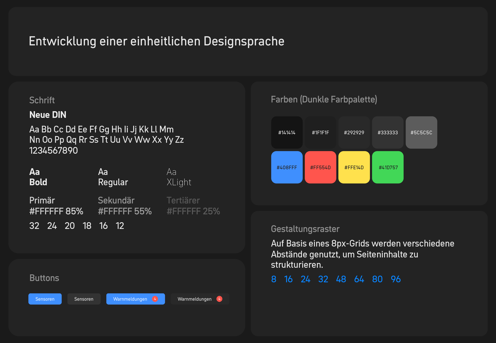
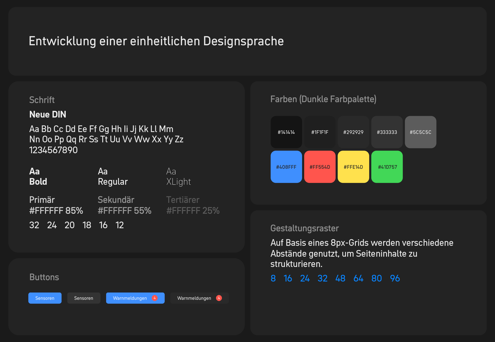

Tunnel Monitoring System
2024
Services
User Research, Storyboards, Flowcharts, User Need Statements, Prototyping,
Design System, Interface Design
The task was to develop a unified software system for the monitoring and control of highway tunnels for the for the Highway Authority. The software enables operators to coordinate technical malfunctions and emergencies, as well as maintenance and rescue operations, from a central location. They can switch between tunnels, and additional monitors display images from surveillance cameras in different configurations. Sensors in the tunnel collect data and trigger alarms if unusual values are detected. Both automatic and manual control of tunnel functions are possible.
After extensive research, user groups were identified and their needs were summarised in User Need Statements. These included primary users such as operators, indirect users such as the Highway Authority, emergency services, road maintenance and drivers. Based on these groups, I created four concrete personas. The development of the interaction concept involved the identification of three action scenarios and the creation of user flows, which were then consolidated into a flowchart. Wireframes were sketched and system requirements were defined and prioritised. A key task was to develop a comprehensive design system for the software.
Downloads Full Project Overview
 
